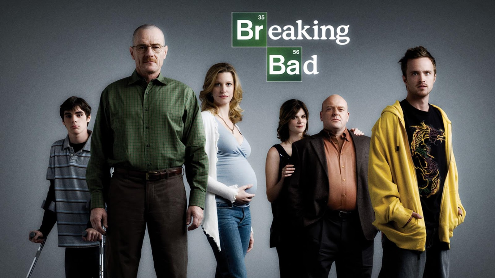

O ator principal, Bryan Cranston, declarou numa entrevista que "o termo 'breaking bad' é uma gíria do Sul que significa que alguém desviou-se do caminho correto e passou a fazer coisas erradas. E isto aplica-se tanto a um dado momento quanto a uma vida inteira." A rede AMC, que exibiu a série em 20 de Janeiro de 2008, pediu originalmente nove episódios para a primeira temporada (incluindo o episódio piloto), mas a Greve dos Escritores Americanos de 2007–2008 limitou a produção aos sete episódios existentes. “Eu quero fazer o sincronismo de cor para cada um desses episódios em que você se senta com o colorista e certifica-se de que a cor de cada cena individual é exatamente da maneira que você queria.” — Vince Gilligan, em entrevista para IndieWire, julho de 2012. Breaking Bad foi criado por Vince Gilligan, que, por vários anos, foi roteirista da série The X-Files. Gilligan queria criar uma série em que o protagonista torna-se o antagonista. "A televisão é historicamente boa em manter seus personagens em uma estase auto-imposto de modo que shows podem durar anos ou mesmo décadas", disse ele. "Quando percebi isso, o próximo passo lógico era pensar, como posso fazer um show em que a unidade fundamental é para a mudança?" Ele acrescentou que seu objetivo com Walter White foi para transformá-lo de Sr. Chips para Scarface. Antes de ser adquirida pela AMC, Breaking Bad foi oferecida a outros canais americanos, como TNT, Showtime e FX. A série foi rejeitada até pela HBO, recusa que chamou a atenção pelo desprezo durante a apresentação (Pitch) feita por Vince Gilligan. Segundo ele, a executiva do canal e os subordinados dela presentes na reunião foram rudes e não prestaram atenção na apresentação. “A executiva que me atendeu não poderia ter mostrado menos interesse. Era palpável sentir o quanto estavam desinteressados”, relembrou.
